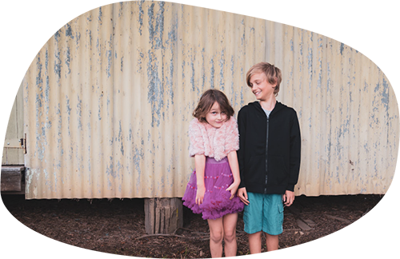
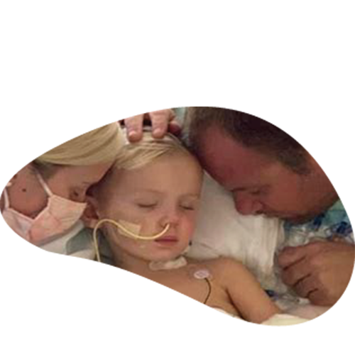
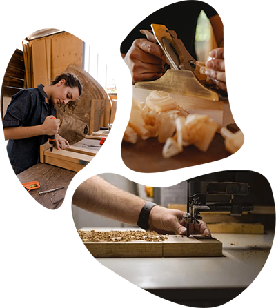

Voici Célian Rodrigez et sa soeur Noémie. Issue d'une famille moyenne, ils ont passées leurs jeunesse a la campagne. Dans les années 80, leurs parents annoncèrent un nouvel arrivant dans cette famille.
A la naissance de la petite Romane Rodrigez, les médecins prennèrent Roamne paniqué, plusieurs heures plus tard ils déclarèrent que Romane était hors de danger mais qu'elle avait enormément de mal deformation.
Les annèes passent, Romane a du se faire emputer de ses jambes et d'un bras. Elle grandi et Célian et Noémie se sentent impuissant face a la tristesse de leurs petite soeur.


Célian et Noémie ont maintenant la vingtaine. Célian est en deuxième années de médecine et Noémie est etude de mécanique.
Ensemble ils decidèrent de lier leurs connaissances pour retrouver le sourire de leurs petite soeur. Ils ont commencer pas créer deux prothèse en bois pour les jambes de Romane. Puis ils l'ont amélioré, ont ensuite créer un bras...
Romane pouvait marcher, courir, elle s'est même inscrite a un club d'atletisme. Elle se sentait heureuse, moins différente.